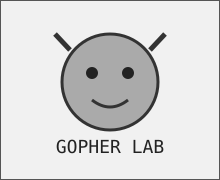
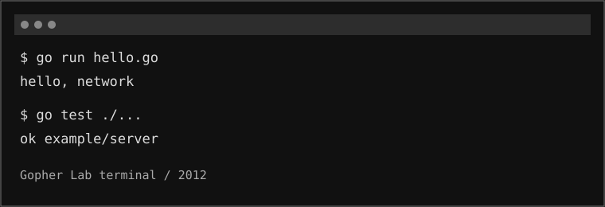
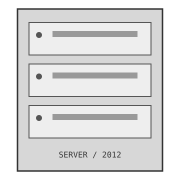

Большие кодовые базы, многопроцессорность, сетевые системы и необходимость быстро собирать программы.
Статическая типизация и компиляция сочетаются с лёгким синтаксисом, автоматическим управлением памятью и встроенной конкурентностью.
| 01 / Старт | Пакеты, функции и первая программа. |
| 02 / Сборка | Компиляция и инструменты без долгой церемонии. |
| 03 / Конкурентность | Goroutine и каналы: несколько задач одновременно. |
| 04 / Сеть | Сетевые программы и стандартная библиотека. |
| 05 / Go 1 | Пишем программу на стабильной основе Go 1. |

Пусть хотя бы программа не заставляет его ждать. На занятии разбираем модель конкурентного выполнения и применяем её к сетевой задаче.
Gopher Lab / terminal / 2012
| ОС | Linux / Windows / Mac OS X — в раннем Go 1 поддерживались эти платформы и другие. |
| Инструмент | Терминал + редактор + компилятор. |
| Сеть | Локальная разработка и подключение к сетевым сервисам. |
| Стиль | Практика, тесты, командная строка. |

2009—2013 — период, в котором особенно хорошо виден переход Go от открытого эксперимента к стабильному языку. Go 1 в марте 2012 года закрепил совместимость в рамках ветки Go 1.x, а Go 1.1 в 2013 году продолжил работу над производительностью.
open source → community → Go 1 → production confidence
Меньше лишней церемонии. Больше работающего кода.
Вымышленные курсы, придуманные для исторического исследования Go.
ПОСМОТРЕТЬ ПРОГРАММУ